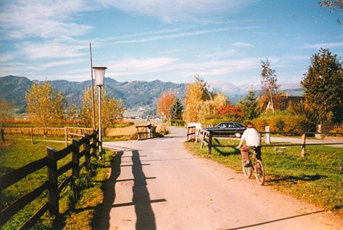

book & film
gerhard friedl
sunday 11 oct 5.00 pm | werkstattkino
lecture: matthias hirth
|
Gerhard
Friedl (1967 - 2009) left behind a
memorable body of film essays that continues to influence
documentary filmmaking today. Volker Pantenburg, as editor,
has created a text compendium with early film reviews and
lucid workshop texts by the gifted filmmaker. Friedl's
personal notes provide insight into his working methods, as
do the numerous conversations with people he has worked
with: the artist and actor Klaus Scherübel, the speaker and
actor Matthias Hirth, the cameraman Rudolf Barmettler. Plus:
a text by the now deceased Werner Dütsch, former member of
the selection committee of the Duisburg Film Week. Last but
not least a text by Friedl that he wrote together with
Finnish artist and companion Laura Horelli about the
unfinished project "Learning from Las Vegas".
|

Knittelfeld
|
Gerhard
Friedl
AT, DE 1997
35 min | Deutsch | 16mm
B+S: Gerhard Friedl | K: Rudolf
Barmettler | T: Andrée Hesse
Sprecher: Matthias Hirth
|
Knittelfeld is a small Austrian town and looks exactly like an
Austrian small town. Contrary to other Austrian small towns
Knittelfeld had to face a challenge. In 1977, the family Pritz moved
into Knittelfeld and confronted the town with a very unusual degree of
suffering, crime and manslaughter.
|
Gerhard
Friedl – Ein Arbeitsbuch
Volker Pantenburg (Hg.)
FilmmuseumSynema Wien 2019
A collection of texts by and about a unique filmmaker.
|

{kind=link}